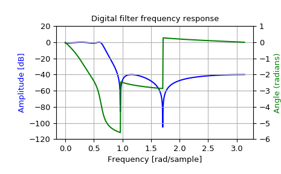

scipy.signal.iirdesign¶
-
scipy.signal.iirdesign(wp, ws, gpass, gstop, analog=False, ftype='ellip', output='ba', fs=None)[source]¶ Complete IIR digital and analog filter design.
Given passband and stopband frequencies and gains, construct an analog or digital IIR filter of minimum order for a given basic type. Return the output in numerator, denominator (‘ba’), pole-zero (‘zpk’) or second order sections (‘sos’) form.
- Parameters
- wp, wsfloat
Passband and stopband edge frequencies. For digital filters, these are in the same units as fs. By default, fs is 2 half-cycles/sample, so these are normalized from 0 to 1, where 1 is the Nyquist frequency. For example:
Lowpass: wp = 0.2, ws = 0.3
Highpass: wp = 0.3, ws = 0.2
Bandpass: wp = [0.2, 0.5], ws = [0.1, 0.6]
Bandstop: wp = [0.1, 0.6], ws = [0.2, 0.5]
For analog filters, wp and ws are angular frequencies (e.g., rad/s).
- gpassfloat
The maximum loss in the passband (dB).
- gstopfloat
The minimum attenuation in the stopband (dB).
- analogbool, optional
When True, return an analog filter, otherwise a digital filter is returned.
- ftypestr, optional
The type of IIR filter to design:
Butterworth : ‘butter’
Chebyshev I : ‘cheby1’
Chebyshev II : ‘cheby2’
Cauer/elliptic: ‘ellip’
Bessel/Thomson: ‘bessel’
- output{‘ba’, ‘zpk’, ‘sos’}, optional
Type of output: numerator/denominator (‘ba’), pole-zero (‘zpk’), or second-order sections (‘sos’). Default is ‘ba’ for backwards compatibility, but ‘sos’ should be used for general-purpose filtering.
- fsfloat, optional
The sampling frequency of the digital system.
New in version 1.2.0.
- Returns
- b, andarray, ndarray
Numerator (b) and denominator (a) polynomials of the IIR filter. Only returned if
output='ba'.- z, p, kndarray, ndarray, float
Zeros, poles, and system gain of the IIR filter transfer function. Only returned if
output='zpk'.- sosndarray
Second-order sections representation of the IIR filter. Only returned if
output=='sos'.
See also
Notes
The
'sos'output parameter was added in 0.16.0.Examples
>>> from scipy import signal >>> import matplotlib.pyplot as plt >>> import matplotlib.ticker
>>> wp = 0.2 >>> ws = 0.3 >>> gpass = 1 >>> gstop = 40
>>> system = signal.iirdesign(wp, ws, gpass, gstop) >>> w, h = signal.freqz(*system)
>>> fig, ax1 = plt.subplots() >>> ax1.set_title('Digital filter frequency response') >>> ax1.plot(w, 20 * np.log10(abs(h)), 'b') >>> ax1.set_ylabel('Amplitude [dB]', color='b') >>> ax1.set_xlabel('Frequency [rad/sample]') >>> ax1.grid() >>> ax1.set_ylim([-120, 20]) >>> ax2 = ax1.twinx() >>> angles = np.unwrap(np.angle(h)) >>> ax2.plot(w, angles, 'g') >>> ax2.set_ylabel('Angle (radians)', color='g') >>> ax2.grid() >>> ax2.axis('tight') >>> ax2.set_ylim([-6, 1]) >>> nticks = 8 >>> ax1.yaxis.set_major_locator(matplotlib.ticker.LinearLocator(nticks)) >>> ax2.yaxis.set_major_locator(matplotlib.ticker.LinearLocator(nticks))
